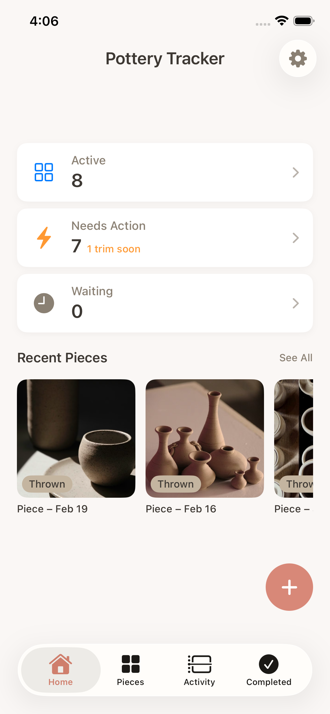
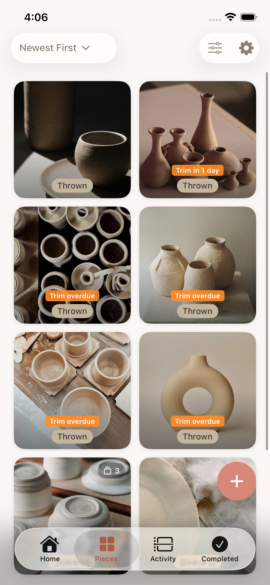
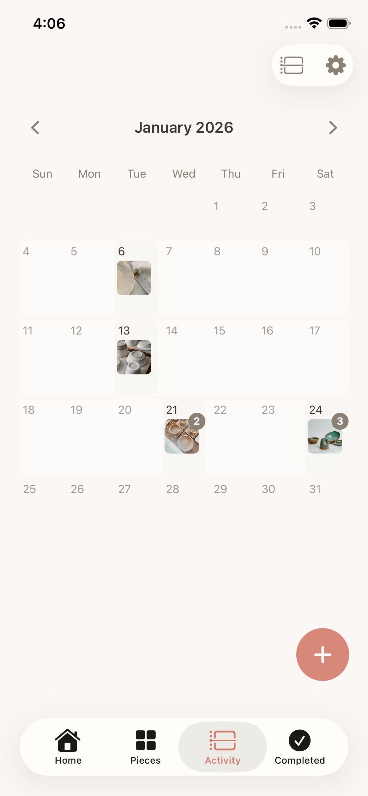
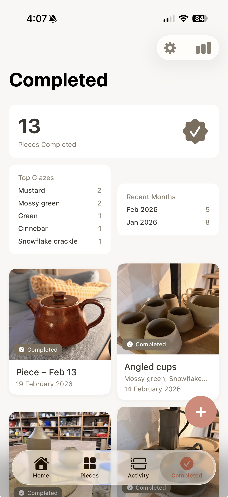

Photo-First History
Every piece builds a visual timeline you can trust. Quickly scan shelves and recognize your work.
Pottery Tracker keeps you organized in busy studios so you always know what you made, where it is, and what to do next. Capture photos, update stages, and stay focused on making instead of searching.
Made for potters, by a potter
Why it works
Studios are busy. Racks move. Kilns fill. Pieces disappear. Pottery Tracker keeps your process clear from first throw to finished work.
Instantly see what needs trimming, glazing, or collecting.
Every piece builds a visual timeline you can trust. Quickly scan shelves and recognize your work.
Move from thrown to finished using stages that match how you actually work.
Find pieces instantly by status, glaze, clay, batch, or completion.
See what needs attention and what fired recently at a glance.
Studio flow
Inside the app




No searching.
No guessing.
No forgotten pieces.
Just better flow and better work.